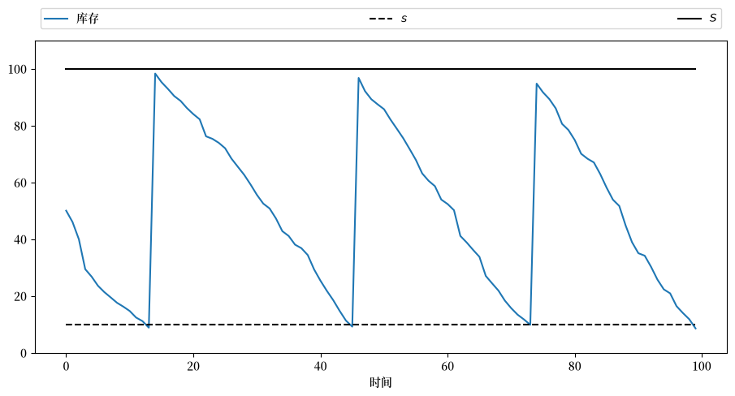
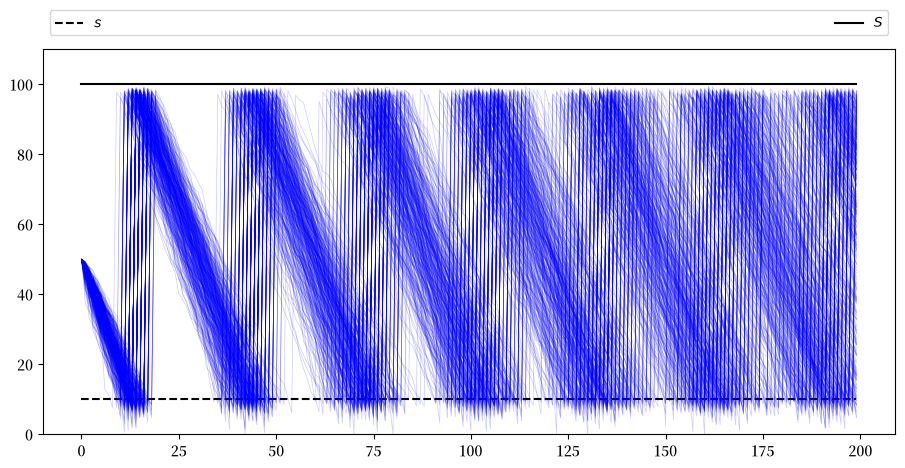
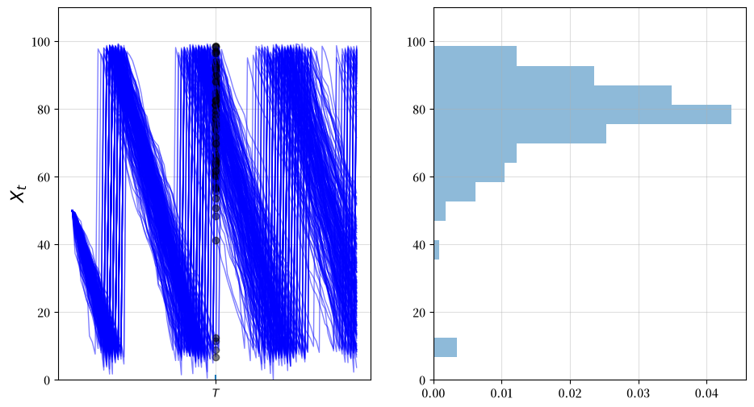
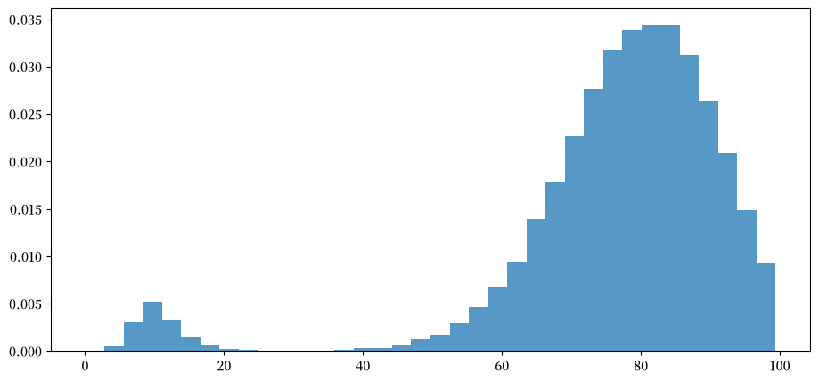
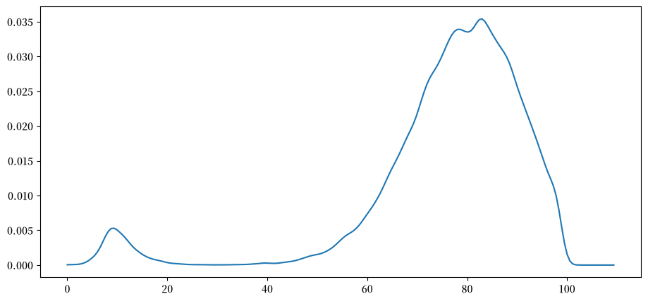
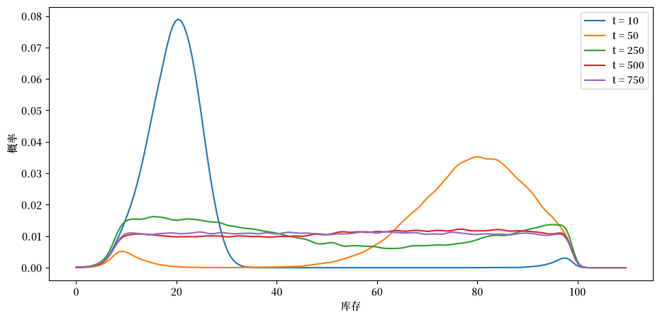

41. 库存动态#
除了 Anaconda 中已有的库之外，本讲座还需要以下库：
!pip install jax
41.1. 概述#
在本讲座中，我们将研究企业的库存时间路径，其遵循所谓的s-S库存动态。
这些企业遵循以下补货规则：
当库存水平下降至某个临界值\(s\)以下时，
企业会订购足够数量的产品，将库存补充到目标水平\(S\)。
这种管理库存的方式在实践中很常见，并且在某些情况下也是最优的。
早期文献和其对宏观经济的影响可以在[Caplin, 1985]中找到。
我们本节的目标是学习更多关于模拟、时间序列和马尔可夫动态的知识。
尽管我们的马尔可夫环境和涉及的概念与有限马尔可夫链讲座的概念是相关的，但在当前应用中状态空间是连续的。
让我们从导入一些库开始
from functools import partial
from typing import NamedTuple
import jax
import jax.numpy as jnp
from jax import random
import matplotlib.pyplot as plt
import matplotlib as mpl
FONTPATH = "fonts/SourceHanSerifSC-SemiBold.otf"
mpl.font_manager.fontManager.addfont(FONTPATH)
plt.rcParams['font.family'] = ['Source Han Serif SC']
plt.rcParams["figure.figsize"] = (11, 5) #设置默认图形大小
from sklearn.neighbors import KernelDensity
41.2. 样本路径#
假设有一个公司，拥有库存 \(X_t\)。
当库存 \(X_t \leq s\) 时，公司会补货至 \(S\) 单位。
公司面临随机需求 \(\{ D_t \}\)，我们假设这是独立同分布的。
使用符号 \(a^+ := \max\{a, 0\}\)，库存动态可以写作
在下文中，我们将假设每个 \(D_t\) 都是对数正态分布的，即
其中 \(\mu\) 和 \(\sigma\) 是参数，\(\{Z_t\}\) 是独立同分布的标准正态分布。
下面是一个类，它用于存储参数并生成库存的时间路径。
class Firm(NamedTuple):
s: int # 触发补货水平
S: int # 库存总容量
μ: float # 冲击位置参数
σ: float # 冲击规模参数
@partial(jax.jit, static_argnames="sim_length")
def sim_inventory_path(firm, x_init, key, sim_length):
"""
从单个 key 出发，模拟长度为 sim_length 的库存路径。
每一期都会通过将时期索引折叠进 key 中，生成一个新的冲击，
因此调用者只需为每条路径传入一个 key，而不是整个 key 数组。
Args:
firm: Firm 对象
x_init: 初始库存水平
key: 单个 JAX 随机 key
sim_length: 需要模拟的时期数量
Returns:
库存水平数组 [X_0, X_1, ..., X_{sim_length-1}]
"""
def update(t, X):
x = X[t - 1]
Z = random.normal(random.fold_in(key, t)) # 该期的新冲击
D = jnp.exp(firm.μ + firm.σ * Z)
x_new = jnp.where(
x <= firm.s,
jnp.maximum(firm.S - D, 0.0), # 补货至S，再满足需求
jnp.maximum(x - D, 0.0), # 直接满足需求
)
return X.at[t].set(x_new)
X = jnp.zeros(sim_length).at[0].set(x_init)
return jax.lax.fori_loop(1, sim_length, update, X)
备注
写作 X.at[t].set(x_new) 会返回一个 新 数组，而不是就地修改 X，这符合 JAX 的函数式风格。这看起来会浪费资源，但实际上并非如此：在经过 jax.jit 编译的函数内部，XLA 编译器会发现旧数组不再被使用，因此会就地执行更新，也就不会在每个时期都分配新的数组。
firm = Firm(s=10, S=100, μ=1.0, σ=0.5)
sim_length = 100
x_init = 50
X = sim_inventory_path(firm, x_init, random.key(21), sim_length)
让我们运行第一个模拟，模拟单个路径：
s, S = firm.s, firm.S
fig, ax = plt.subplots()
bbox = (0.0, 1.02, 1.0, 0.102)
legend_args = {"ncol": 3, "bbox_to_anchor": bbox, "loc": 3, "mode": "expand"}
ax.plot(X, label="库存")
ax.plot(jnp.full(sim_length, s), "k--", label="$s$")
ax.plot(jnp.full(sim_length, S), "k-", label="$S$")
ax.set_ylim(0, S + 10)
ax.set_xlabel("时间")
ax.legend(**legend_args)
plt.show()
findfont: Failed to find font weight normal, now using 600.
findfont: Failed to find font weight normal, now using 600.

现在让我们模拟多条路径，从而更全面地了解不同结果的概率：
sim_length = 200
fig, ax = plt.subplots()
ax.plot(jnp.full(sim_length, s), "k--", label="$s$")
ax.plot(jnp.full(sim_length, S), "k-", label="$S$")
ax.set_ylim(0, S + 10)
ax.legend(**legend_args)
for i in range(400):
X = sim_inventory_path(firm, x_init, random.key(i), sim_length)
ax.plot(X, "b", alpha=0.2, lw=0.5)
plt.show()

41.3. 边缘分布#
现在让我们来看看某一固定时间点 \(T\) 时 \(X_T\) 的边缘分布 \(\psi_T\)。
我们将通过在给定初始条件 \(X_0\) 的情况下，生成多个 \(X_T\) 的样本来实现。
通过这些 \(X_T\) 的样本，我们可以构建其分布 \(\psi_T\) 的图像。
下面是\(T=50\)的情况下的一个可视化示例。
T = 50
M = 200 # 样本数量
ymin, ymax = 0, S + 10
fig, axes = plt.subplots(1, 2, figsize=(11, 6))
for ax in axes:
ax.grid(alpha=0.4)
ax = axes[0]
ax.set_ylim(ymin, ymax)
ax.set_ylabel("$X_t$", fontsize=16)
ax.vlines((T,), -1.5, 1.5)
ax.set_xticks((T,))
ax.set_xticklabels((r"$T$",))
sample = []
for m in range(M):
X = sim_inventory_path(firm, x_init, random.key(m), 2 * T)
ax.plot(X, "b-", lw=1, alpha=0.5)
ax.plot((T,), (X[T],), "ko", alpha=0.5)
sample.append(X[T])
axes[1].set_ylim(ymin, ymax)
axes[1].hist(
sample,
bins=16,
density=True,
orientation="horizontal",
histtype="bar",
alpha=0.5,
)
plt.show()
findfont: Failed to find font weight normal, now using 600.
findfont: Failed to find font weight normal, now using 600.

通过抽取更多样本，我们可以得到一个更清晰的图像
T = 50
M = 50_000
fig, ax = plt.subplots()
# 通过为每条路径分配一个key，一次性向量化地生成M条路径
keys = random.split(random.key(0), M)
paths = jax.vmap(
sim_inventory_path, in_axes=(None, None, 0, None)
)(firm, x_init, keys, T + 1)
sample = paths[:, T]
ax.hist(sample, bins=36, density=True, histtype="bar", alpha=0.75)
plt.show()

注意到分布呈双峰
大多数公司已经补了两次货，但也有少部分公司只补货一次（见上图路径）。
第二种公司的库存较少。
我们还可以使用核密度估计来近似这个分布。
核密度估计可以被理解为平滑的直方图。
当我们认为底层分布是平滑的时候，核密度估计通常比直方图提供更准确的图像。
我们将使用scikit-learn中的核密度估计量
def plot_kde(sample, ax, label=""):
xmin, xmax = 0.9 * sample.min(), 1.1 * sample.max()
xgrid = jnp.linspace(xmin, xmax, 200)
kde = KernelDensity(kernel="gaussian").fit(sample[:, None])
log_dens = kde.score_samples(xgrid[:, None])
ax.plot(xgrid, jnp.exp(log_dens), label=label)
fig, ax = plt.subplots()
plot_kde(sample, ax)
plt.show()

概率密度的分配与上面直方图所显示的类似。
41.4. 练习#
练习 41.1
这个模型是渐近平稳的，具有唯一的平稳分布。
（作为背景知识，有关平稳性的讨论，请参见 我们关于AR(1)过程的讲座——基本概念是相同的。）
特别是，边缘分布序列\(\{\psi_t\}\)正在收敛到一个唯一的极限分布，且该分布不依赖于初始条件。
虽然我们不会在此证明这一点，但我们可以通过模拟来研究这一性质。
你的任务是，根据上述讨论，在时间点\(t = 10, 50, 250, 500, 750\)生成并绘制序列\(\{\psi_t\}\)。
（核密度估计量可能是呈现每个分布最佳的方式。）
你应该能看到收敛性，体现在两个连续分布之间的差异越来越小。
尝试使用不同的初始条件来验证，从长期来看，分布在不同初始条件下是不变的。
解答 练习 41.1
以下是其中一种解法：
由于这个计算需要大量的CPU运算，我们尝试使用jax.jit和jax.vmap来编写高效的代码，以便在CPU/GPU上运行。
@jax.jit
def simulate_firm_forward(firm, x_init, key, num_periods):
"""
将单个公司向前模拟num_periods步，并返回其最终库存水平。
每期都会从key中抽取一个新的冲击。
"""
def update(t, x):
Z = random.normal(random.fold_in(key, t))
D = jnp.exp(firm.μ + firm.σ * Z)
return jnp.where(
x <= firm.s,
jnp.maximum(firm.S - D, 0.0),
jnp.maximum(x - D, 0.0),
)
return jax.lax.fori_loop(0, num_periods, update, x_init * 1.0)
# 对公司进行向量化：每个公司都有自己的初始水平和自己的key
simulate_firms_forward = jax.vmap(
simulate_firm_forward, in_axes=(None, 0, 0, None)
)
def shift_firms_forward(firm, current_inventory_levels, num_periods, key):
"""
使用JAX向量化，将多个公司向前推移num_periods个时期。
返回：
经过num_periods后的新库存水平数组
"""
# 为每个公司生成一个独立的随机key
num_firms = len(current_inventory_levels)
firm_keys = random.split(key, num_firms)
# 并行运行所有公司的模拟
new_inventory_levels = simulate_firms_forward(
firm, current_inventory_levels, firm_keys, num_periods
)
return new_inventory_levels
x_init = 50
num_firms = 50_000
sample_dates = 0, 10, 50, 250, 500, 750
first_diffs = jnp.diff(jnp.array(sample_dates))
fig, ax = plt.subplots()
X = jnp.full(num_firms, x_init)
current_date = 0
for d in first_diffs:
X = shift_firms_forward(firm, X, d, random.key(current_date + 1))
current_date += d
plot_kde(X, ax, label=f"t = {current_date}")
ax.set_xlabel("库存")
ax.set_ylabel("概率")
ax.legend()
plt.show()

注意到，到 \(t=500\) 或 \(t=750\) 时，密度几乎不再变化。
我们已经得到了平稳密度的一个合理近似。
你可以通过测试几个不同的初始条件，来确认初始条件确实不重要。
例如，你可以尝试将所有公司的初始库存设置为 \(X_0 = 20\) 或 \(X_0 = 80\)，然后重新运行上面的代码。
练习 41.2
使用模拟的方法，计算初始库存为 \(X_0 = 70\) 的公司在前50个时期内需要补货两次或以上的概率。
你需要较大的样本量才能得到准确的结果。
解答 练习 41.2
这里是一种解法。
同样地，由于计算量相对较大，我们编写了一个专门的经过JAX即时编译的函数，并使用jax.vmap来实现公司之间的并行计算。
记录程序运行所需的时间和输出结果。
@jax.jit
def simulate_firm_restocks(firm, x_init, key, num_periods):
"""
将单个公司模拟num_periods个时期，并报告其是否补货超过一次。
每期都会从key中抽取一个新的冲击。
返回：
如果公司补货次数 > 1，则返回1，否则返回0
"""
def update(t, carry):
x, restock_count = carry
Z = random.normal(random.fold_in(key, t))
D = jnp.exp(firm.μ + firm.σ * Z)
restock = x <= firm.s
x_new = jnp.where(
restock,
jnp.maximum(firm.S - D, 0.0),
jnp.maximum(x - D, 0.0),
)
return x_new, restock_count + restock
# 记录库存水平以及累计补货次数
_, total_restocks = jax.lax.fori_loop(
0, num_periods, update, (x_init * 1.0, 0)
)
return (total_restocks > 1).astype(jnp.int32)
# 对所有公司进行向量化模拟（每个公司一个key）
simulate_firms_restocks = jax.vmap(
simulate_firm_restocks, in_axes=(None, None, 0, None)
)
def compute_freq(
firm, x_init=70, sim_length=50, num_firms=1_000_000, key=random.key(2)
):
"""
使用JAX计算补货2次或以上的公司的频率。
参数：
firm：Firm数据类
x_init：所有公司的初始库存水平
sim_length：每个公司的模拟长度
num_firms：要模拟的公司数量
key：JAX随机key
返回：
补货2次或以上的公司所占的比例
"""
# 为每个公司生成一个独立的随机key
firm_keys = random.split(key, num_firms)
# 对所有公司运行模拟
restock_indicators = simulate_firms_restocks(
firm, x_init, firm_keys, sim_length
)
# 计算频率（补货次数 > 1的公司所占比例）
frequency = jnp.mean(restock_indicators)
return frequency
%%time
freq = compute_freq(firm)
print(f"至少发生两次缺货的频率 = {freq}")
至少发生两次缺货的频率 = 0.44668900966644287
CPU times: user 4.11 s, sys: 42.9 ms, total: 4.15 s
Wall time: 1.26 s